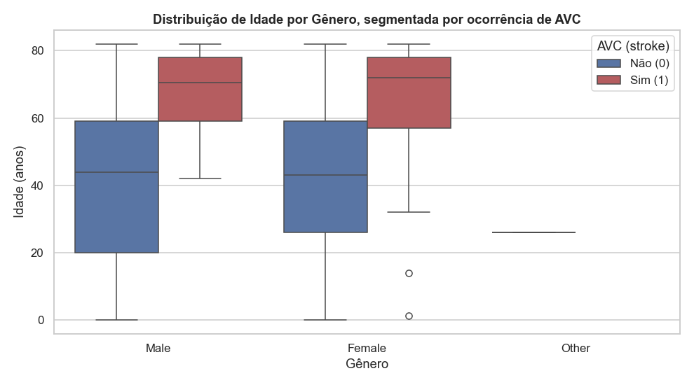
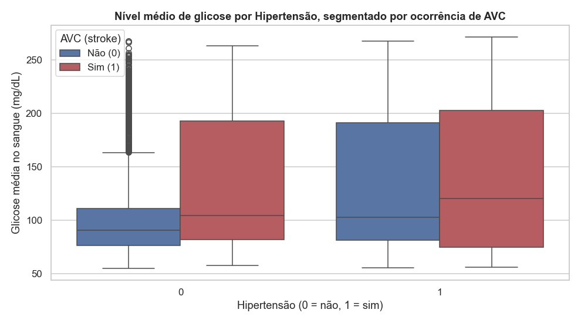
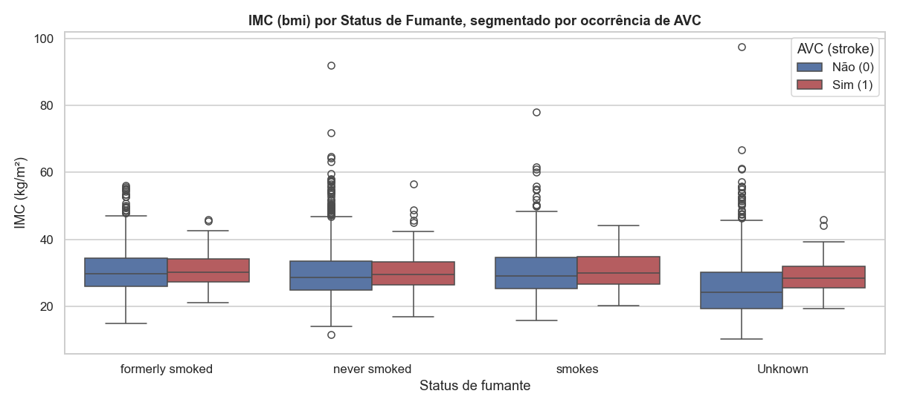
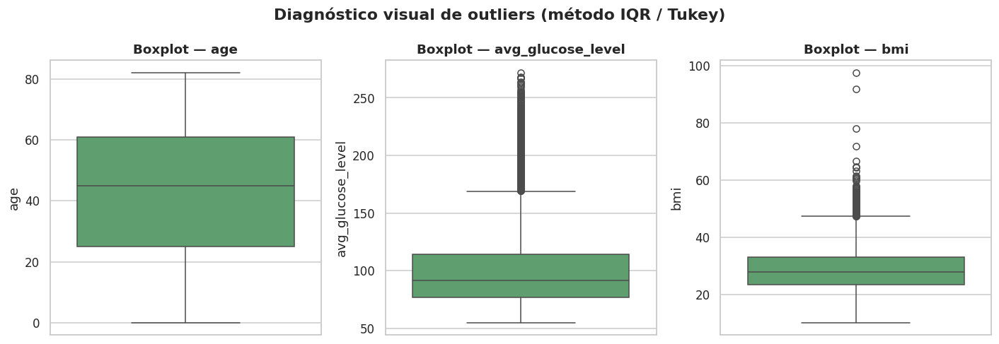

Análise Multivariada e Diagnóstico de Outliers
Nesta etapa avaliamos como uma variável numérica se comporta simultaneamente em função de uma variável categórica e do target (stroke), usando boxplots agrupados (hue). O objetivo é identificar padrões de risco que só aparecem quando cruzamos três dimensões ao mesmo tempo — por exemplo, será que o efeito da glicemia sobre o risco de AVC é diferente entre hipertensos e não hipertensos?
Idade × Gênero × AVC
sns.boxplot(
data=df, x="gender", y="age", hue="stroke",
palette=["#4C72B0", "#C44E52"]
)

Em ambos os gêneros, a mediana de idade dos pacientes que sofreram AVC é visivelmente maior (por volta de 70 anos) do que a dos que não sofreram (por volta de 43 anos), confirmando a idade como o principal fator de risco já identificado na análise bivariada. Não há diferença relevante entre gêneros dentro de cada grupo de stroke.
Glicose × Hipertensão × AVC
sns.boxplot(
data=df, x="hypertension", y="avg_glucose_level", hue="stroke",
palette=["#4C72B0", "#C44E52"]
)

Pacientes hipertensos apresentam mediana de glicose um pouco mais alta, e em ambos os grupos (hipertensos e não hipertensos) os pacientes com AVC concentram-se em níveis de glicose mais elevados e com maior dispersão — sugerindo um possível efeito combinado (comorbidade) entre hipertensão, hiperglicemia e risco de AVC.
IMC × Tabagismo × AVC
sns.boxplot(
data=df, x="smoking_status", y="bmi", hue="stroke",
palette=["#4C72B0", "#C44E52"]
)

As medianas de IMC são semelhantes entre os grupos, mas há bastante dispersão e outliers em todas as categorias. O IMC isoladamente parece ser um preditor mais fraco de stroke do que idade e glicose, mas mantém-se relevante como covariável clínica.
Em conjunto, os três gráficos reforçam que o risco de AVC neste dataset resulta de uma combinação de fatores (idade avançada + comorbidades metabólicas), e não de uma única variável isolada — o que motiva o uso de um modelo multivariado na APS2, em vez de regras univariadas simples.
Diagnóstico Formal de Outliers
Aplicamos o método do intervalo interquartil (IQR — Tukey, 1977) às três variáveis numéricas contínuas do dataset (age, avg_glucose_level, bmi). Um valor é considerado outlier se estiver fora do intervalo [Q1 - 1.5 × IQR, Q3 + 1.5 × IQR].
def iqr_outlier_report(series, name):
q1, q3 = series.quantile(0.25), series.quantile(0.75)
iqr = q3 - q1
low, high = q1 - 1.5 * iqr, q3 + 1.5 * iqr
mask = (series < low) | (series > high)
return {"variável": name, "Q1": q1, "Q3": q3, "IQR": iqr,
"limite inferior": low, "limite superior": high,
"n_outliers": mask.sum(), "% outliers": 100 * mask.sum() / len(series)}
| Variável | Q1 | Q3 | IQR | Limite inferior | Limite superior | n outliers | % outliers |
|---|---|---|---|---|---|---|---|
age |
25.00 | 61.00 | 36.00 | -29.00 | 115.00 | 0 | 0.00% |
avg_glucose_level |
77.24 | 114.09 | 36.84 | 21.98 | 169.36 | 627 | 12.27% |
bmi |
23.50 | 33.10 | 9.60 | 9.10 | 47.50 | 110 | 2.24% |

Justificativa da estratégia de tratamento de outliers
age: não apresenta outliers pelo critério IQR — os valores variam de 0 a 82 anos, faixa fisiologicamente plausível. Nenhum tratamento é necessário.avg_glucose_level: apresenta uma quantidade relevante de outliers superiores (12,27%). Do ponto de vista clínico, glicemias elevadas (>150–200 mg/dL) são esperadas em pacientes diabéticos ou pré-diabéticos e são justamente um dos fatores associados a maior risco de AVC — ou seja, não são erros de medição, e sim sinal informativo. Removê-los descartaria exatamente os casos de maior risco.bmi: também apresenta outliers superiores (2,24%), em geral condizentes com obesidade severa, o que é plausível clinicamente, embora valores extremos (ex.: IMC > 60) sejam raros e possam conter algum erro de digitação/medição.
Decisão adotada: optamos por não remover nenhuma instância por outliers — remover pacientes com valores extremos de glicose/IMC enviesaria o dataset justamente contra os casos de maior risco de AVC, que já é a classe minoritária (~4,9%). Em vez disso, o tratamento de outliers é feito via transformação de escala (padronização, ver Pipeline de Pré-processamento), e não via remoção de linhas, preservando o tamanho da amostra e a informação clínica relevante.